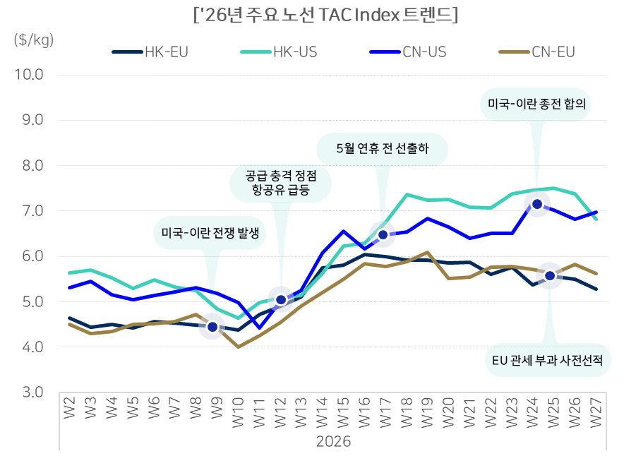

해상 시장이 조기 선적과 지정학 리스크로 들썩였던 상반기, 항공 화물 시장은 조금 다른 그림을 그렸습니다. 수요는 전쟁 이전 수준을 빠르게 회복했지만, 공급이 그 속도를 따라가지 못하면서 고운임 국면이 이어졌습니다. 상반기 동향을 먼저 짚고, 하반기 전망까지 함께 살펴봅니다.
상반기 동향
수요 — 전쟁 이전 수준으로 빠르게 회복
상반기 항공 화물 수요는 전년 동기 대비 4.4% 증가했습니다. 글로벌 수요가 전쟁 이전 수준으로 빠르게 회복하면서, 공급보다 수요가 우위에 서는 국면이 만들어졌습니다.
지역별로는 뚜렷한 차별화가 나타났습니다. 아시아 권역 물동은 전년 대비 5.6% 성장하며 전체 수요 회복의 주요 성장 축 역할을 했습니다. 특히 아시아-유럽 노선 물동이 늘면서 전체 아시아 노선의 75% 이상을 차지했습니다. 반면 중동은 전쟁의 직접적인 영향으로 물동이 15.2% 감소하며 급감했습니다.
공급 — 회복은 하지만 수요를 못 따라간다
공급은 전년 동기 대비 1.9% 증가했습니다. 중동발 공급 충격 이후 점진적으로 회복하는 흐름을 보였지만, 그 증가폭은 수요 증가폭에는 소폭 못 미쳤습니다. 최근의 단기 공급 회복은 하계 여객 공급 증가가 주도한 것으로 나타났습니다.
기종별로 나눠보면 흐름이 더 선명합니다. 전체 공급이 전년 대비 1.8% 늘어난 가운데, 화물기 공급(전체의 41%)은 6.3% 늘며 가장 큰 증가폭을 보였습니다. 여객기 공급(41%)은 2.8% 줄었고, 특송기 공급(19%)은 2.9% 늘었습니다. 고부가가치 화물 수요가 커지면서 항공사들이 화물기 공급을 전년보다 확대한 것으로 해석됩니다.
이런 화물기 공급 확대는 특히 동북아발 북미향 노선에서 두드러졌습니다. 태평양 노선 화물기 공급이 16% 증가했는데, 국가별로는 중국 38%, 대만 12%, 한국 11%씩 늘었습니다. 항공사들이 고수익 태평양 노선을 중심으로 화물 공급을 재배치하고 있다는 뜻입니다.
운임 — 중동 전쟁 이후 3년 내 최고치
수요 우위에 공급 차질이 겹치면서 상반기 운임은 전년 평균 대비 약 12.1% 상승했습니다. 중동발 공급 충격의 영향으로 최근 3개년 내 최고 운임을 기록한 뒤, 그 고운임이 그대로 유지됐습니다.
특히 반도체 수요가 집중된 아시아-북미 노선, 그리고 중동 경유 비중이 높은 아시아-유럽 노선에서 운임 상승폭이 크게 확대됐습니다.
흐름을 시점별로 보면, 미국-이란 전쟁 발생 이후 공급 충격이 정점에 달하면서 항공유가 급등했고, 이 여파로 운임이 단기간에 급등했습니다. 이후 미국-이란 종전 합의가 이뤄졌지만, 5월 연휴 전 선출하 수요와 EU 관세 부과를 앞둔 사전 선적 수요가 이어지며 고운임 기조는 상반기 내내 유지됐습니다.

하반기 전망
수요 — 저성장이지만, 일부 노선은 여전히 타이트
2026년 항공 화물 수요 성장률은 2~3%로 전망됩니다. 전년(4%) 대비 1~2%포인트 둔화된 수치로, 항공 수요가 완만한 저성장 국면에 진입했다는 뜻입니다. 2024년 전자상거래 물동 급증으로 고성장을 지났던 시장이 이제 성장 속도를 낮추고 있는 셈입니다.
다만 수요가 둔화된다고 해서 시장 전체가 느슨해지는 것은 아닙니다. 성장의 중심축이 바뀌고 있기 때문입니다. 전자상거래 쪽에서는 중국발 전자상거래 매출이 전년 대비 11% 감소했는데, 특히 미국향은 33%, 유럽향은 6% 줄었습니다. 이 여파로 3~4분기 이커머스 전통 성수기는 전년보다 약화될 전망입니다.
그 자리를 메우는 것이 AI·반도체 화물입니다. 글로벌 반도체 매출액이 전년 대비 106% 늘었고, 아시아발 북미향 반도체 물동은 22% 증가했습니다. 특히 아시아발 북미향 AI·하이테크 물동은 전년 동기 대비 86% 증가하며 성장을 주도하고 있습니다.
그 결과 수요 증가는 시장 전반이 아니라 일부 고수요 노선에 집중되는 모습입니다. 아시아발 북미향·유럽향 노선의 수요가 견조하게 유지되며, 아시아→북미·유럽 노선의 동적 적재율은 87~90%선으로 여전히 타이트합니다. 대만·중국·말레이시아 등 전자부품·반도체 생산 거점발 물동량이 늘면서, 동북아발 북미 노선을 중심으로 트랜스퍼시픽 물동 성장폭이 확대될 전망입니다.
공급 — 항공기가 안 온다
공급 쪽은 구조적인 제약이 계속됩니다. 신규 항공기 주문량 대비 인도량 격차가 좀처럼 좁혀지지 않고 있습니다. 2026년 1~5월 신규 주문량은 1,139대(에어버스 815대, 보잉 324대)인데, 같은 기간 신규 인도량은 512대에 불과합니다. 전년 대비 인도 속도가 11% 개선되긴 했지만, 주문량 대비 인도량 격차는 여전히 확대되는 추세입니다.
그 결과 미인도 잔량(Backlog)은 역대 최대 수준입니다. 2026년 5월 기준 미인도 잔량은 18,100대를 넘어섰는데, 이는 현재 운항 중인 항공기 대수의 약 60%에 달하는 규모입니다. 부품·엔진 공급 지연과 인력 부족으로 생산 속도가 좀처럼 빨라지지 않으면서 미인도량이 계속 누적되고 있습니다.
이런 인도 지연은 화물기 공급에도 그림자를 드리웁니다. 인도 적체로 노후 항공기의 퇴역이 미뤄지면서 평균 기령은 15.2년으로 역대 최고 수준까지 올라갔습니다. 여기에 구형 화물기 생산이 종료되고 신조기 인도까지 늦어지면서, 화물기 공급이 축소될 압력이 가중될 전망입니다. 이런 신조기 인도 병목은 중장기적으로 항공화물 공급을 제약하는 구조적 요인으로 작용할 것으로 보입니다.
운임 — 3분기 하락, 4분기 반등
상반기는 1분기 경기 둔화로 수요가 약세를 보이다, 2분기 중동 전쟁발 공급·유가 충격으로 전 노선 운임이 급등한 뒤 그 추세가 이어진 시기였습니다. 하반기에는 3분기와 4분기가 서로 다른 방향으로 움직일 전망입니다.
3분기는 하락 요인이 우세합니다. 국제 유가와 항공유 급등세가 정상화되며 비용과 항공사 운영 부담이 완화되고, 수요가 집중된 장거리 노선의 공급이 확대되며 하계 여객 회복 속도도 빨라질 전망입니다. 또한 전자상거래 증가세가 위축되고 EU의 소액 화물 관세 부과가 겹치며 성장이 둔화됩니다. 6월 중국발 밀어내기 물량 이후로는 전자상거래 물동이 전년 대비 소폭 약세를 보일 것으로 예상됩니다. 다만 모바일·PC 신제품 출시를 앞둔 부품·완제품의 사전 출하 물량이 8~10월 사이 동남아·인도발 시즌성 단기 수요로 작용할 가능성은 변수입니다.
4분기는 상승 요인이 다시 우세해집니다. AI 투자 확대에 따른 데이터센터·인프라 수요가 지속적으로 증가하며 HBM·AI 서버·데이터센터 장비 중심의 항공화물 수요가 확대될 전망입니다. 여기에 연말 성수기 쇼핑 시즌이 겹치면서, 성수기 리테일 물량과 기업의 연말 재고 조정이 공급을 흡수하고, 아시아발 장거리 노선에서는 화물 공간(Space) 경쟁이 심화되며 단기적으로 운임이 상승할 가능성이 있습니다.

정리하면
2026년 항공 화물 시장은 "상반기에 전쟁발 충격으로 3년 내 최고 운임을 찍고, 하반기에는 3분기에 숨을 고른 뒤 4분기에 다시 뛰는" 흐름으로 이어집니다. 그 밑바탕에는 전자상거래가 식어가는 자리를 AI·반도체 화물이 채우는 수요 엔진 교체가 있고, 신조기 인도 지연이라는 구조적 공급 제약이 함께 작용하고 있습니다.
이 흐름을 구체적으로 뒷받침하는 데이터 — 항공유 가격이 3분기·4분기에 어떤 속도로 정상화되는지, AI 화물이 노선별로 얼마나 성장하고 있는지, 유류할증료가 어떤 단계로 조정되는지 — 는 전체 리포트에서 시나리오별 수치와 함께 확인하실 수 있습니다.
▶ 본 콘텐츠에 포함된 2026년 하반기 물류 시장 전망은 작성 시점 기준 데이터를 바탕으로 한 예측이며, 실제 시장 상황과 다를 수 있습니다. 유가, 지정학적 리스크 등 다양한 변수에 따라 전망은 변경될 수 있으니 참고 자료로 활용해주시기 바랍니다.